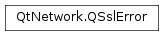

QSslError¶
Synopsis¶
Functions¶
- def
__eq__(other) - def
__ne__(other) - def
certificate() - def
error() - def
errorString() - def
swap(other)
Detailed Description¶
The
PySide2.QtNetwork.QSslErrorclass provides an SSL error.
PySide2.QtNetwork.QSslErrorprovides a simple API for managing errors duringPySide2.QtNetwork.QSslSocket‘s SSL handshake.
-
class
PySide2.QtNetwork.QSslError¶ -
class
PySide2.QtNetwork.QSslError(error) -
class
PySide2.QtNetwork.QSslError(error, certificate) -
class
PySide2.QtNetwork.QSslError(other) Parameters: - error –
PySide2.QtNetwork.QSslError.SslError - other –
PySide2.QtNetwork.QSslError - certificate –
PySide2.QtNetwork.QSslCertificate
Constructs a
PySide2.QtNetwork.QSslErrorobject with no error and default certificate.Constructs a
PySide2.QtNetwork.QSslErrorobject. The argument specifies theerrorthat occurred.Constructs a
PySide2.QtNetwork.QSslErrorobject. The two arguments specify theerrorthat occurred, and whichcertificatethe error relates to.See also
Constructs an identical copy of
other.- error –
-
PySide2.QtNetwork.QSslError.SslError¶ Describes all recognized errors that can occur during an SSL handshake.
Constant Description QSslError.NoError QSslError.UnableToGetIssuerCertificate QSslError.UnableToDecryptCertificateSignature QSslError.UnableToDecodeIssuerPublicKey QSslError.CertificateSignatureFailed QSslError.CertificateNotYetValid QSslError.CertificateExpired QSslError.InvalidNotBeforeField QSslError.InvalidNotAfterField QSslError.SelfSignedCertificate QSslError.SelfSignedCertificateInChain QSslError.UnableToGetLocalIssuerCertificate QSslError.UnableToVerifyFirstCertificate QSslError.CertificateRevoked QSslError.InvalidCaCertificate QSslError.PathLengthExceeded QSslError.InvalidPurpose QSslError.CertificateUntrusted QSslError.CertificateRejected QSslError.SubjectIssuerMismatch QSslError.AuthorityIssuerSerialNumberMismatch QSslError.NoPeerCertificate QSslError.HostNameMismatch QSslError.UnspecifiedError QSslError.NoSslSupport QSslError.CertificateBlacklisted See also
-
PySide2.QtNetwork.QSslError.certificate()¶ Return type: PySide2.QtNetwork.QSslCertificateReturns the certificate associated with this error, or a null certificate if the error does not relate to any certificate.
-
PySide2.QtNetwork.QSslError.error()¶ Return type: PySide2.QtNetwork.QSslError.SslErrorReturns the type of the error.
-
PySide2.QtNetwork.QSslError.errorString()¶ Return type: unicode Returns a short localized human-readable description of the error.
-
PySide2.QtNetwork.QSslError.__ne__(other)¶ Parameters: other – PySide2.QtNetwork.QSslErrorReturn type: PySide2.QtCore.boolReturns
trueif this error is not equal toother; otherwise returns false.
-
PySide2.QtNetwork.QSslError.__eq__(other)¶ Parameters: other – PySide2.QtNetwork.QSslErrorReturn type: PySide2.QtCore.boolReturns
trueif this error is equal toother; otherwise returnsfalse.
-
PySide2.QtNetwork.QSslError.swap(other)¶ Parameters: other – PySide2.QtNetwork.QSslErrorSwaps this error instance with
other. This function is very fast and never fails.
© 2018 The Qt Company Ltd. Documentation contributions included herein are the copyrights of their respective owners. The documentation provided herein is licensed under the terms of the GNU Free Documentation License version 1.3 as published by the Free Software Foundation. Qt and respective logos are trademarks of The Qt Company Ltd. in Finland and/or other countries worldwide. All other trademarks are property of their respective owners.